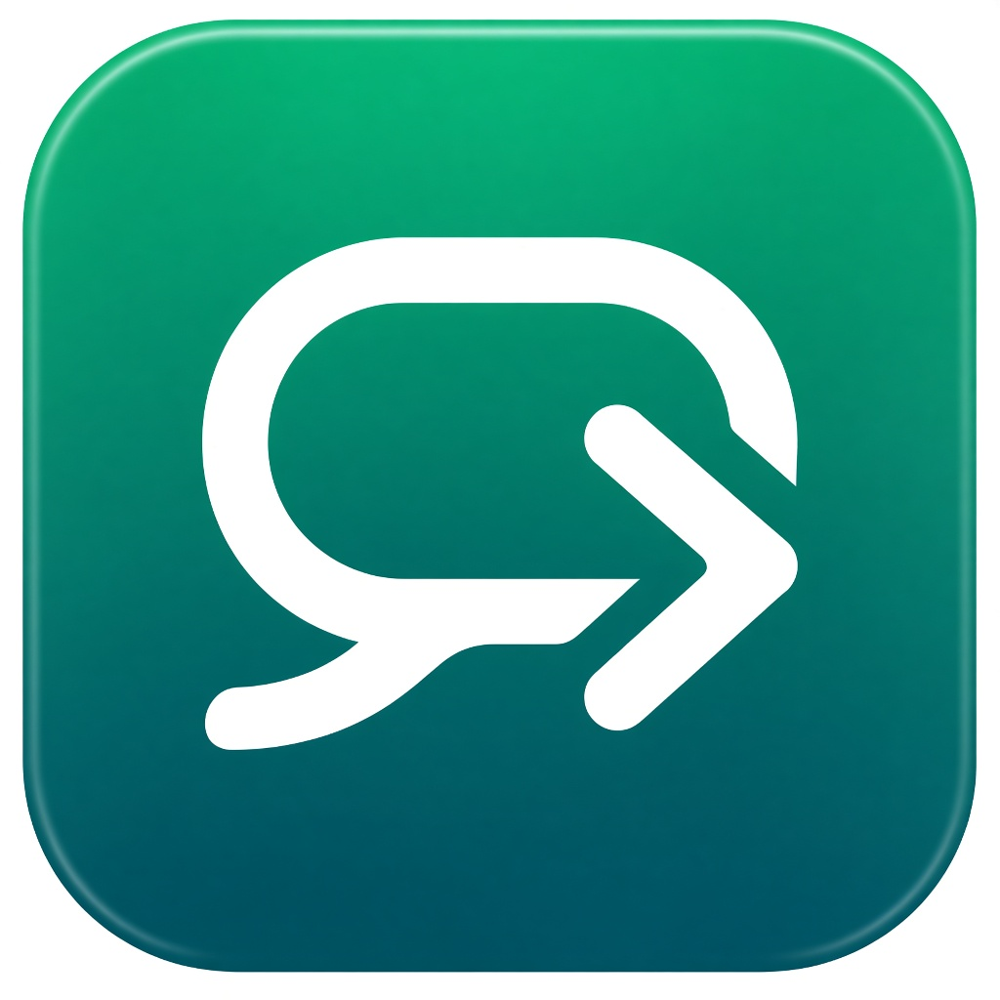
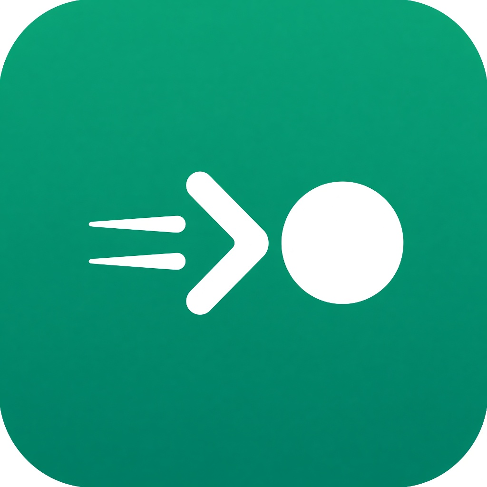
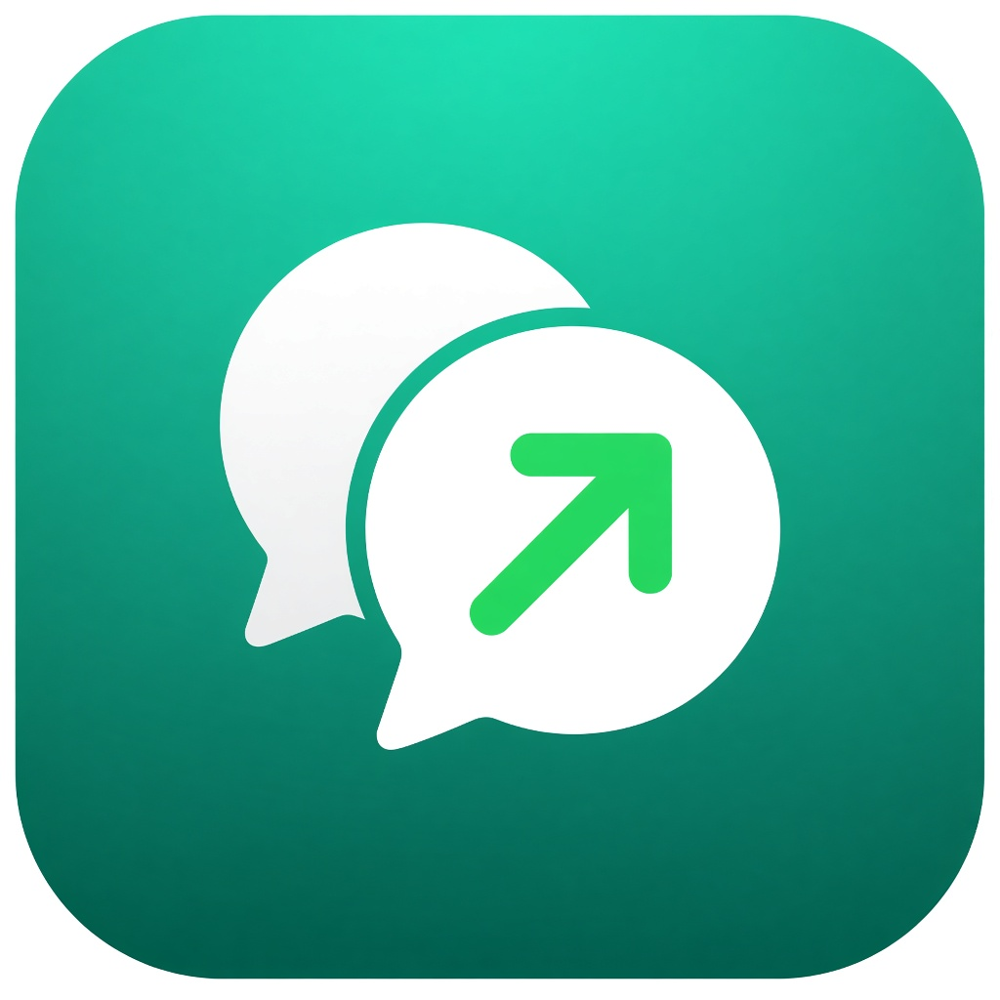

Nudg logo options
Symbol only. Pick one and say which number to use as the Desk icon.

1. Forward bubbleA conversation nudged ahead

2. Nudge markA push that moves something forward

3. Shared inboxA team thread heading forward